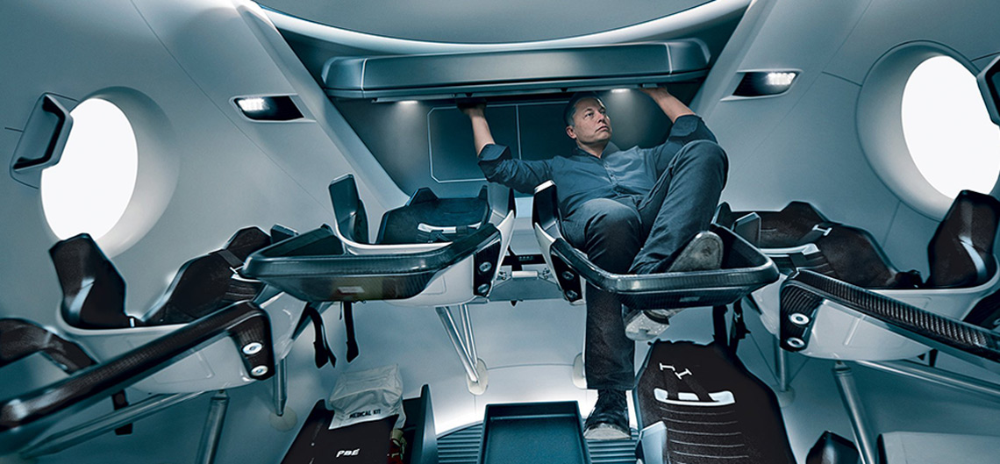

<!DOCTYPE html>
<html lang="ru">
    <head>
        <meta charset="UTF-8">
        <meta name="viewport" content="width=device-width, initial-scale=1">
        <title>Сайт проекта «Пантеон» - полёты на Марс</title>
    </head>

    <body>
        <header class="main-header">
            <a class="logo">
                
            </a>
        </header>

        <main>
            <h1 class="visually-hidden">Проект «Пантеон» - полёты на Марс
            </h1>

            <section class="promo">
                <h2>Пантеон Олимп</h2>
                <p>
                    Пункт назначения:
                    <span>Пантеон,</span>
                    <span>Марс</span>
                </p>

                <video width="580" height="290" poster="img/preview-1.jpg">
                    <source src="video.mp4" type="video/mp4">
                </video>
                <button type="button">
                    Смотреть видео
                </button>

                <p>
                    Первый город  на планете Марс недалеко от горы Олимп
                </p>
            </section>

            <section class="facts">
                <h2 class="visually-hidden">Факты</h2>
                <dl class="facts-list">
                    <div>
                        <dt>4</dt>
                        <dd>планета по удаленности от Солнца</dd>
                    </div>
                    <div>
                        <dt>7</dt>
                        <dd>по размерам планета Солнечной системы</dd>
                    </div>
                    <div>
                        <dt>10,7%</dt>
                        <dd>массы Земли (ваш вес будет в 3 раза меньше, чем на земле)</dd>
                    </div>
                    <div>
                        <dt>2</dt>
                        <dd>спутника вместо Луны (как картошка, только больше)</dd>
                    </div>
                    <div>
                        <dt>21 км</dt>
                        <dd>высота самой высокой горы Марса</dd>
                    </div>
                    <div>
                        <dt>+20 &degC</dt>
                        <dd>максимальная температура на поверхности</dd>
                    </div>
                </dl>
            </section>

            <section class="info">
                <h2>
                    Марс. Вспомнить всё
                </h2>

                <ul class="info-list">
                    <li>
                        <h3>
                            Что такое Марс?
                        </h3>
                        <p>
                            Планета Солнечной системы, названа в честь Марса — древнеримского бога войны. Иногда Марс называют «красной планетой» из-за красного оттенка поверхности, придаваемого ей оксидом железа.
                        </p>
                        <p>
                        Особенности планеты — наличие слабой отмосферы, состоящей в основном из улекислого газа, времена года, пылевые бури, сильная эррозия почв.
                        </p>
                    </li>

                    <li>
                        <h3>
                            Где это? Как туда доехать?
                        </h3>
                        <p>
                            Расстояние до Марса - почти 56 миллионов километров. Чтобы преодалеть такое расстояние, нужно лететь на межпланетном корабле 7-8 месяцев
                        </p>
                    </li>
                </ul>

                
            </section>

            <section class="implementation">
                <h2>От идеи до реализации</h2>

                <section class="facts">
                    <h3>Илон Маск. Гений или безумец?</h3>
                    <p>
                        Канадско-американский инженер, предприниматель, изобретатель и инвестор; миллиардер. Основатель компаний SpaceX и X.com, позже переименованной в PayPal. Планирует потратить большую часть накоплений на реализацию своей мечты, а также мечты многих тысяч романтиков, писателей, учёных: создать внеземную цивилизацию.
                    </p>
                    <p>
                        <q>
                            Мы должны сделать эту мечту реальностью за наше время жизни. Любой человек, который пожелает отправиться на Марс, должен иметь такую возможность
                        </q>
                        — заявил Маск на Международной астронавтической конференции в Гвадалахаре (Мексика). Он обосновал необходимость своего проекта вопросом выживания человечества, которое для своего сохранения должно стать «космическим видом». Илон поставил перед собой цель: сократить стоимость вывода кораблей в космос в 10 раз, что станет первым шагом для человечества в освоении Марса.
                    </p>

                    
                </section>

                <section class="cost">
                    <h3>Стоимость перелета</h3>
                    
                    <p>
                        Высадка двоих астронавтов на Луну обошлась США в 20 млрд. долларов. Маск стремится сократить эту цифру в 20 000 раз, что составит <span>500 000 долларов</span> на человека.
                    </p>

                    <form action="#" method="post">
                        <span>$500 k</span>
                        <label for="astronaut-name" class="visually-hidden">Имя</label>
                        <input type="text" name="astronaut-name" id="astronaut-name" placeholder="и ты на Марсе!">

                        <button type="submit">
                            Я готов лететь
                        </button>
                    </form>
                </section>
            </section>

            <section class="pitfalls">
                <h2>
                    Подводные камни в масштабах космоса
                </h2>

                <video poster="img/preview-2.jpg" width="1139" height="572">
                    <source src="video.mp4" type="video/mp4">
                </video>
                <button type="button">
                    Смотреть видео
                </button>

                <h3>
                    Жить или выживать?
                </h3>
                <p>
                    Чем отличаются Земля и Марс? Какие условия встретят новых поселенцев?
                </p>
                <p>
                    Марс холодная и засушливая планета, на которой есть своя атмосфера, на 96% состоящая из углекислых газов, а минимальная температура опускается до -140 градусов по Цельсию. Каждый год по весне на планете случаются пылевые бури, длящиеся от нескольких часов до нескольких месяцев.
                </p>
                <p>
                    На планете отсутствует магнитное поле, поэтому радиационный фон повышен. А низкая гравитация при длитеьном пребывании на Марсе сделает возвращение на Землю невозможным. Полёт на Марс — билет в один конец с целью создать новую цивилизацию.
                </p>
            </section>

            <section class="life">
                <h2>
                    Организация жизни в колонии
                </h2>
                
                <p>
                    В основе жилых помещений лежат надувные компоненты — спальня, рабочая зона, гостиная, парник для выращивания зелени — 50 м<sup>2</sup> на человека. Благодаря этим компонентам, колонисты смогут принять душ, приготовить свежую пищу, носить обычную одежду. Весь комплекс соединен сетью ходов.
                </p>
                <a href="#">Подробнее</a>
            </section>

            <section class="news">
                <h2>
                    Деньги приготовил. Когда вылетаем?
                </h2>
                <p>Будь в курсе новостей</p>

                <form action="#" method="get">

                    <label for="name" class="visually-hidden">Имя</label>
                    <input type="text" name="name" id="name" placeholder="Имя">

                    <label for="email" class="visually-hidden">Email</label>
                    <input type="text" name="email" id="email" placeholder="E-mail">

                    <button type="submit">Подписаться</button>
                </form>

                <p>
                    Первый частный полёт на Марс осуществится в 2018 году в беспилотном варианте корабль Dragon V2 с помощью
                </p>
                <p>
                    Для всех желающих открыты курсы подготовки
                </p>
                <a href="#">Критерии отбора</a>
            </section>
        </main>

        <footer class="main-footer">
            <a class="logo">
                
            </a>

            <a href="#">Подробнее о проекте</a>

            <ul class="social-list">
                <p>Следуйте за нами</p>

                <li>
                    <a href="#">Vkontakte</a>
                </li>
                <li>
                    <a href="#">Twitter</a>
                </li>
                <li>
                    <a href="#">Facebook</a>
                </li>
                <li>
                    <a href="#">Youtube</a>
                </li>
            </ul>
        </footer>
    </body>
</html>